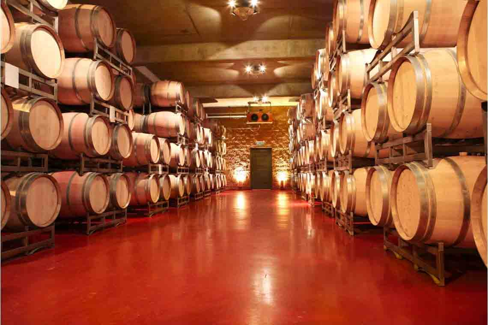
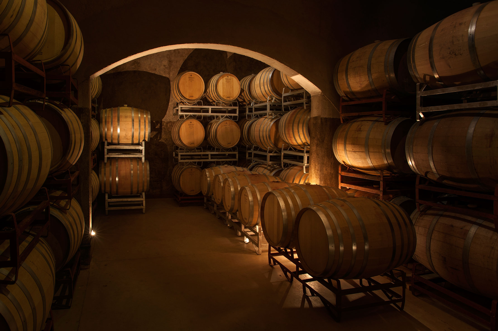
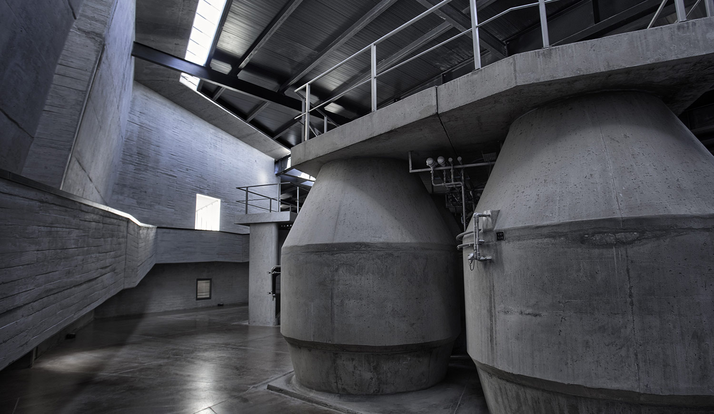

INFRAESTRUCTURA
Todo el proceso, desde la plantación de viñas, cosecha, elaboración, fraccionamiento, distribución y comercialización interna y externa, es cuidadosamente controlado con un equipamiento tecnológico de última generación, lográndose así resultados por demás satisfactorios.
Luego del proceso de elaboración, nuestros vinos tintos se añejan en vasijas de roble de Nancy, Francia, de 5.000 a 35.000 litros, contando con 440 en total entre toneles y cubas. El añejamiento otorga suavidad y untuosidad ya que la madera suaviza los taninos del vino, engrosa su estructura y prolonga su vida favoreciendo una estiba posterior en botella por varios años, dando como resultado un vino de mayor complejidad. Los vinos blancos serán conservados en tanques por un periodo máximo de un año. La finalidad de la Bodega es obtener blancos sin madera, frutados, frescos y jóvenes.
CAPACIDAD DE ALMACENAMIENTO
- 40 millones de litros.
- 5,7 millones en toneles y cubas de roble francés.
- 15 millones en tanques de acero inoxidable.
- 19,3 millones en piletas de hormigón epoxipadas.